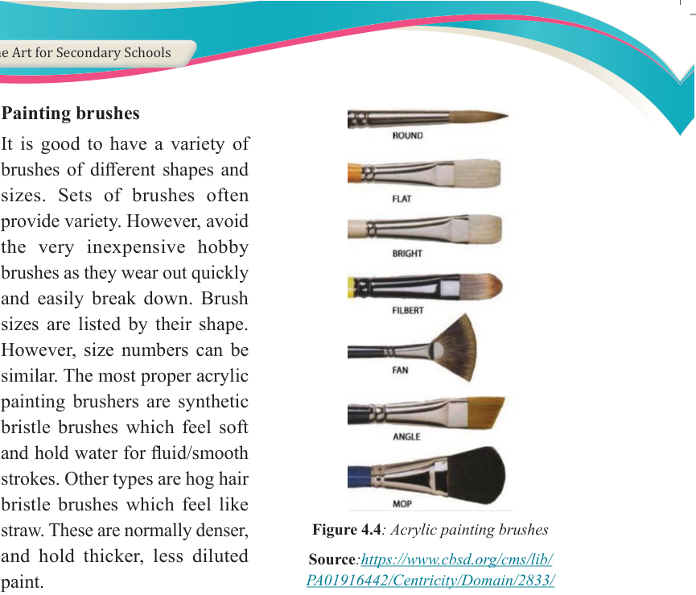
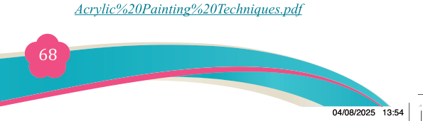
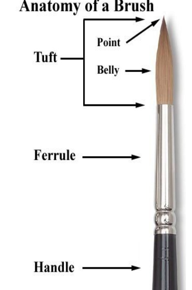

Fine Art for Secondary Schools

68

Student’s Book Form Two

2. Painting brushes

It is good to have a variety of
brushes of different shapes and
sizes. Sets of brushes often
provide variety. However, avoid
the very inexpensive hobby
brushes as they wear out quickly
and easily break down. Brush
sizes are listed by their shape.
However, size numbers can be
similar. The most proper acrylic
painting brushers are synthetic
bristle brushes which feel soft
and hold water for fluid/smooth
strokes. Other types are hog hair
bristle brushes which feel like
straw. These are normally denser,
and hold thicker, less diluted
paint.
Figure 4.4: Acrylic painting brushes
Source:https://www.cbsd.org/cms/lib/
PA01916442/Centricity/Domain/2833/
Acrylic%20Painting%20Techniques.pdf
Acrylic paint brushes come in various
shapes and sizes. Never use one brush
size for an entire painting.
Construction and use
A painting brush is made of three parts
namely, the handle, the ferule, and tuft
brush hair or bristles.

Figure 4.5: Parts of an acrylic painting brush
Source:https://www.cbsd.org/cms/lib/
PA01916442/Centricity/Domain/2833/
Acrylic%20Painting%20Techniques.pdf
04/08/2025 13:54